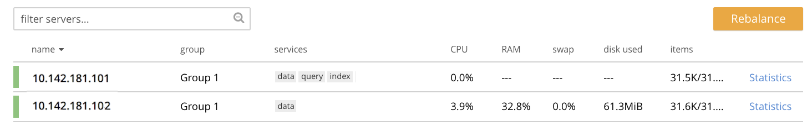
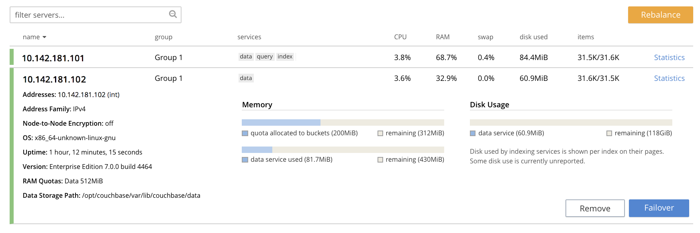

List Cluster Nodes
The nodes of a cluster can be listed, and details on each retrieved.
Listing Nodes
Couchbase Server allows the nodes of a cluster to be listed, and data retrieved on each.
Examples on This Page
The examples in the subsections below show how the nodes of the same cluster can be listed, using the UI, the CLI, and the REST API respectively.
The examples assume:
-
A two-node cluster already exists; as at the conclusion of Join a Cluster and Rebalance.
-
The cluster has the Full Administrator username of
Administrator, and password ofpassword.
List Nodes with the UI
All nodes in the current cluster can be viewed on the Servers screen of Couchbase Web Console. Note that this display is identical for all nodes in the cluster: therefore, whether you open the console on node one or node two of a two-node cluster, the same information is provided.
Proceed as follows:
-
Access the Couchbase Web Console Servers screen, on either node
10.142.181.101or node101.142.181.102, by left-clicking on the Servers tab in the left-hand navigation bar. The display is as follows:This indicates that the cluster currently consists of the nodes
10.142.181.101and101.142.181.102. Each row provides the following details:-
name: The name of the node. In this case, each node is named after its IP address.
-
group: The Group occupied by the node. For information, see Server Group Awareness.
-
services: The services running on the node. For information, see Services.
-
CPU: The percentage of available CPU resources currently occupied.
-
RAM: The percentage of available RAM currently occupied. For information on Couchbase memory-management, see Memory.
-
swap: The percentage of available swap space in use.
-
disk used: The amount of disk space currently used, in megabytes.
-
items: The number of active and replica items currently on the node, in thousands. If the figure is
15.2 K/15.8 K, this indicates that 15.2 K items are in active vBuckets on the node, and 15.8 in replica. For information on vBuckets, see vBuckets.
-
-
To see further details of each node, left-click on the row for the node. The row expands vertically, as follows:
The additional information now shown includes:
-
Name, Version, Uptime, OS version, and Data Service RAM Quota.
-
Storage Paths for the Data, Index, Eventing, and Analytics services, specified during node-initialization.
-
Currently available memory and disk-space.
-
-
Left-click on the Statistics tab for
10.142.181.101, at the right-hand side of the row. The Statistics screen is displayed. This provides statistics related to each of the buckets on the cluster. These include information on the Active Data Size, Data Total Disk Size, and Data Fragmentation. For more information, see Monitor with the UI.
List Nodes with the CLI
To list the nodes of a cluster with the CLI, use the server-list command, as follows:
couchbase-cli server-list -c 10.142.181.101:8091 \ --username Administrator \ --password password
The output is as follows:
ns_1@10.142.181.101 10.142.181.101:8091 healthy active ns_1@10.142.181.102 10.142.181.102:8091 healthy active
On occasions when a node is inactive or failed, output of the following kind is produced:
ns_1@10.142.181.101 10.142.181.101:8091 healthy active ns_1@10.142.181.102 10.142.181.102:8091 healthy inactiveFailed
Alternatively, the CLI host-list command can be used:
couchbase-cli host-list -c 10.142.181.102:8091 --username Administrator --password password
Note that the command above specifies the second node in the cluster: any node-name in the cluster can be used, with the same results. The output is as follows:
10.142.181.101:8091 10.142.181.102:8091
Thus, the command returns a list of IP addresses and Couchbase Web Console port numbers.
For more information, see the command reference for server-list and host-list.
List Nodes with the REST API
To list all nodes in a cluster by means of the REST API, use the /pools/default URI.
A Couchbase pool represents computing resources (such as machines, memory, CPU, and disks) that are used to
host Couchbase buckets.
Couchbase Server clusters support a single pool, named default.
The method returns a large amount of information, which includes many of the details used in the Couchbase Web Console Statistics panel, described above.
The output may be unformatted, and thereby difficult to read until formatting is applied.
The following call passes the result to the jq command-line JSON processor for
formatting, and then uses the standard command-line utility grep to reduce the output to available hostnames:
curl -u Administrator:password -v -X GET \ http://10.142.181.101:8091/pools/default | jq '.' | grep hostname
The output is as follows:
"hostname": "10.142.181.101:8091", "hostname": "10.142.181.102:8091",
For more information, see Retrieving Cluster Information.
Next Steps
Now that you have built a cluster and examined the nodes it contains, learn details on how to Remove a Node and Rebalance.